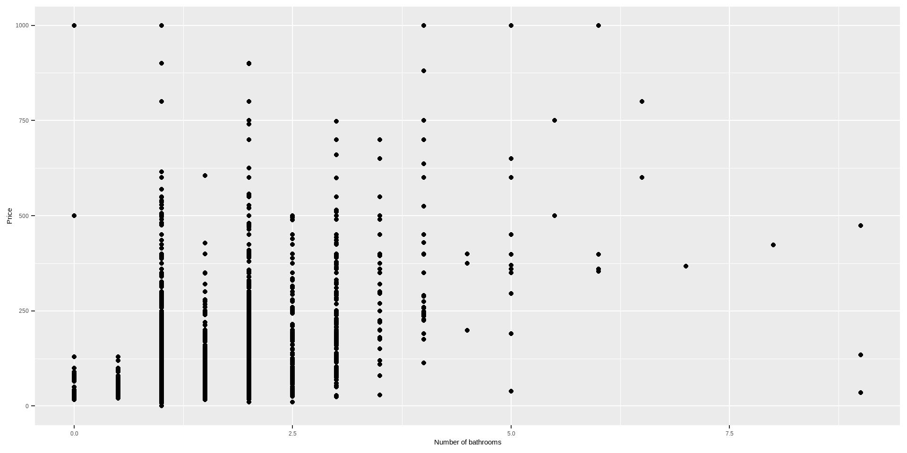

Import/Export Data
Reading rectangular data into R

Reading rectangular data into R
readr
read_csv()- comma delimited filesread_csv2()- semicolon separated files (common in countries where , is used as the decimal place)read_tsv()- tab delimited filesread_delim()- reads in files with any delimiterread_fwf()- fixed width files- …
readxl
read_excel()- read xls or xlsx files- …
Reading data (import)
# A tibble: 935 × 26
id firstname surname year category affiliation city country
<dbl> <chr> <chr> <dbl> <chr> <chr> <chr> <chr>
1 1 Wilhelm Co… Röntgen 1901 Physics Munich Uni… Muni… Germany
2 2 Hendrik A. Lorentz 1902 Physics Leiden Uni… Leid… Nether…
3 3 Pieter Zeeman 1902 Physics Amsterdam … Amst… Nether…
4 4 Henri Becque… 1903 Physics École Poly… Paris France
5 5 Pierre Curie 1903 Physics École muni… Paris France
6 6 Marie Curie 1903 Physics <NA> <NA> <NA>
7 6 Marie Curie 1911 Chemist… Sorbonne U… Paris France
8 8 Lord Raylei… 1904 Physics Royal Inst… Lond… United…
9 9 Philipp Lenard 1905 Physics Kiel Unive… Kiel Germany
10 10 J.J. Thomson 1906 Physics University… Camb… United…
# ℹ 925 more rows
# ℹ 18 more variables: born_date <date>, died_date <date>,
# gender <chr>, born_city <chr>, born_country <chr>,
# born_country_code <chr>, died_city <chr>, died_country <chr>,
# died_country_code <chr>, overall_motivation <chr>, share <dbl>,
# motivation <chr>, born_country_original <chr>,
# born_city_original <chr>, died_country_original <chr>, …Writing data (export)
- Write a file
Variable names
Data with bad names
[1] "ID" "Price"
[3] "neighbourhood" "accommodates"
[5] "Number of bathrooms" "Number of Bedrooms"
[7] "n beds" "Review Scores Rating"
[9] "Number of reviews" "listing_url" Option 1 - Define column names
edibnb_col_names <- read_csv("../data/import/edibnb-badnames.csv",
col_names = c("id", "price",
"neighbourhood", "accommodates",
"bathroom", "bedroom",
"bed", "review_scores_rating",
"n_reviews", "url"))
names(edibnb_col_names) [1] "id" "price"
[3] "neighbourhood" "accommodates"
[5] "bathroom" "bedroom"
[7] "bed" "review_scores_rating"
[9] "n_reviews" "url" Option 2 - Format text to snake_case
Option 3 - Use ticks (`)
If you go this option, ticks have to be used everytime the variable name is called
Missing Data

Option 1. Explicit NAs
# A tibble: 9 × 3
x y z
<dbl> <chr> <chr>
1 1 a hi
2 NA b hello
3 3 <NA> <NA>
4 4 d ola
5 5 e hola
6 NA f whatup
7 7 g wassup
8 8 h sup
9 9 i <NA> Option 2. Specify column types
# A tibble: 9 × 3
x y z
<dbl> <chr> <chr>
1 1 a hi
2 NA b hello
3 3 Not applicable 9999
4 4 d ola
5 5 e hola
6 NA f whatup
7 7 g wassup
8 8 h sup
9 9 i <NA> Column types
| type function | data type |
|---|---|
col_character() |
character |
col_date() |
date |
col_datetime() |
POSIXct (date-time) |
col_double() |
double (numeric) |
col_factor() |
factor |
col_guess() |
let readr guess (default) |
col_integer() |
integer |
col_logical() |
logical |
col_number() |
numbers mixed with non-number characters |
col_numeric() |
double or integer |
col_skip() |
do not read |
col_time() |
time |
Reading in Survey Data

haven
- SAS:
read_sas()- reads .sas7bdat + .sas7bcat filesread_xpt()- reads SAS transport fileswrite_xpt()- writes SAS transport files
- SPSS:
read_sav()orread_spss()- reads .sav filesread_por()- reads older .por fileswrite_sav()- writes .sav files
- Stata:
read_dta()orread_stata()- reads .dta fileswrite_dta()- writes .dta files
Labelled data
When reading in data from SAS, SPSS, and Stata, data is likely to have labels
Rows: 1,259
Columns: 57
$ CaseId <chr> "16278", "1155", "15730", "1949…
$ LastConnectionDate <chr> "", "", "", "", "", "", "", "",…
$ LastConnectionStartTime <chr> "", "", "", "", "", "", "", "",…
$ ConnectionDurationInSeconds <chr> "0", "0", "0", "0", "0", "0", "…
$ ConnectionDurationInMinutes <chr> "0", "0", "0", "0", "0", "0", "…
$ LastQuestionFilled <chr> "", "", "", "", "", "", "", "",…
$ NumberOfConnections <chr> "0", "0", "0", "0", "0", "0", "…
$ resDisposition <dbl+lbl> 0, 0, 0, 0, 0, 0, 0, 0, 0, …
$ TotalDurationSec <chr> "0", "0", "0", "0", "0", "0", "…
$ Device <chr> "Unknown", "Unknown", "Unknown"…
$ DeviceOS <chr> "Unknown", "Unknown", "Unknown"…
$ DeviceVersion <chr> "", "", "", "", "", "", "", "",…
$ DeviceBrowser <chr> "Unknown", "Unknown", "Unknown"…
$ DeviceBrowserVersion <chr> "", "", "", "", "", "", "", "",…
$ S1 <dbl+lbl> NA, NA, NA, NA, NA, NA, NA,…
$ TT1 <dbl> NA, NA, NA, NA, NA, NA, NA, NA,…
$ AGE <dbl+lbl> NA, NA, NA, NA, NA, NA, NA,…
$ Q1 <dbl+lbl> NA, NA, NA, NA, NA, NA, NA,…
$ Q1B <dbl+lbl> NA, NA, NA, NA, NA, NA, NA,…
$ Q2 <dbl+lbl> NA, NA, NA, NA, NA, NA, NA,…
$ Q2B <dbl+lbl> NA, NA, NA, NA, NA, NA, NA,…
$ Q3 <dbl+lbl> NA, NA, NA, NA, NA, NA, NA,…
$ Q4 <dbl+lbl> NA, NA, NA, NA, NA, NA, NA,…
$ Q5 <dbl+lbl> NA, NA, NA, NA, NA, NA, NA,…
$ TT2 <dbl+lbl> NA, NA, NA, NA, NA, NA, NA,…
$ GENDER <dbl+lbl> NA, NA, NA, NA, NA, NA, NA,…
$ Q6 <dbl+lbl> NA, NA, NA, NA, NA, NA, NA,…
$ Q7C1 <dbl+lbl> 0, 0, 0, 0, 0, 0, 0, 0, 0, …
$ Q7C2 <dbl+lbl> 0, 0, 0, 0, 0, 0, 0, 0, 0, …
$ Q7C3 <dbl+lbl> 0, 0, 0, 0, 0, 0, 0, 0, 0, …
$ Q7C4 <dbl+lbl> 0, 0, 0, 0, 0, 0, 0, 0, 0, …
$ Q7C5 <dbl+lbl> 0, 0, 0, 0, 0, 0, 0, 0, 0, …
$ Q7C6 <dbl+lbl> 0, 0, 0, 0, 0, 0, 0, 0, 0, …
$ Q7_VN <dbl+lbl> 0, 0, 0, 0, 0, 0, 0, 0, 0, …
$ RACE <dbl+lbl> NA, NA, NA, NA, NA, NA, NA,…
$ Q8 <chr> "", "", "", "", "", "", "", "",…
$ QS <dbl+lbl> NA, NA, NA, NA, NA, NA, NA,…
$ QSB <dbl+lbl> NA, NA, NA, NA, NA, NA, NA,…
$ TT3 <dbl+lbl> NA, NA, NA, NA, NA, NA, NA,…
$ PROPENSITY <dbl+lbl> NA, NA, NA, NA, NA, NA, NA,…
$ EM7 <dbl+lbl> NA, NA, NA, NA, NA, NA, NA,…
$ EM7B <dbl+lbl> NA, NA, NA, NA, NA, NA, NA,…
$ EM8C1 <dbl+lbl> 0, 0, 0, 0, 0, 0, 0, 0, 0, …
$ EM8C2 <dbl+lbl> 0, 0, 0, 0, 0, 0, 0, 0, 0, …
$ EM8C3 <dbl+lbl> 0, 0, 0, 0, 0, 0, 0, 0, 0, …
$ EM8C4 <dbl+lbl> 0, 0, 0, 0, 0, 0, 0, 0, 0, …
$ EM8C5 <dbl+lbl> 0, 0, 0, 0, 0, 0, 0, 0, 0, …
$ EM8C6 <dbl+lbl> 0, 0, 0, 0, 0, 0, 0, 0, 0, …
$ EM8C7 <dbl+lbl> 0, 0, 0, 0, 0, 0, 0, 0, 0, …
$ EM8C8 <dbl+lbl> 0, 0, 0, 0, 0, 0, 0, 0, 0, …
$ EM8C9 <dbl+lbl> 0, 0, 0, 0, 0, 0, 0, 0, 0, …
$ EM8C10 <dbl+lbl> 0, 0, 0, 0, 0, 0, 0, 0, 0, …
$ EM8_VN <dbl+lbl> 0, 0, 0, 0, 0, 0, 0, 0, 0, …
$ EM9 <dbl+lbl> NA, NA, NA, NA, NA, NA, NA,…
$ EM14 <dbl+lbl> NA, NA, NA, NA, NA, NA, NA,…
$ Q34 <dbl+lbl> NA, NA, NA, NA, NA, NA, NA,…
$ Q36 <dbl+lbl> NA, NA, NA, NA, NA, NA, NA,…Labels
[1] "Have you ever been in the Military, are you in a college Reserve Officers’ Training Corps (ROTC) program or one of the Service academies, or have you been accepted to and are waiting to begin any of these programs?" No, none of the above apply to me.
0
Yes, I have previously been in the Military.
1
Yes, I am currently in the Military.
2
Yes, I am in or have been accepted to and will be in a college ROTC program.
3
Yes, I am in or have been accepted to and will be in a Service academy.
4 Handling labels in R
R doesn’t use labels the same way
Option 1: Factors
Rows: 484
Columns: 13
$ S1 <fct> I wish to contin…
$ TT1 <dbl> 38, 60, 16, 48, …
$ AGE <fct> NA, NA, NA, NA, …
$ Q1 <fct> "Yes, I am an ad…
$ Q1B <fct> NA, NA, "Yes, I …
$ Q2 <fct> "No, none of the…
$ Q2B <fct> NA, Air Force, N…
$ Q3 <fct> No, Yes, NA, No,…
$ Q4 <fct> Yes, NA, NA, Yes…
$ Q5 <fct> Influencer, Pare…
$ TT2 <fct> Prefer not to an…
$ GENDER <fct> Female/Prefer no…
$ Q6 <fct> Yes, Yes, Yes, Y…Option 2: Strip the labels
Rows: 484
Columns: 13
$ S1 <dbl> 1, 1, 1, 1, 1, 1…
$ TT1 <dbl> 38, 60, 16, 48, …
$ AGE <dbl> NA, NA, NA, NA, …
$ Q1 <dbl> 1, 1, 2, 1, 1, 2…
$ Q1B <dbl> NA, NA, 1, NA, N…
$ Q2 <dbl> 0, 1, 0, 1, 0, 1…
$ Q2B <dbl> NA, 3, NA, 9, NA…
$ Q3 <dbl> 0, 1, NA, 0, NA,…
$ Q4 <dbl> 1, NA, NA, 1, NA…
$ Q5 <dbl> 3, 2, 1, 3, 1, 3…
$ TT2 <dbl> 3, 2, 3, 1, 1, N…
$ GENDER <dbl> 2, 2, 2, 1, 1, N…
$ Q6 <dbl> 1, 1, 1, 1, 0, N…Note on stripping the labels
- Variable and value labels have different functions for removal
zap_label()singular “label” removes the label from the variable namezap_labels()plural “label” removes the labels from the values
[1] "Have you ever been in the Military, are you in a college Reserve Officers’ Training Corps (ROTC) program or one of the Service academies, or have you been accepted to and are waiting to begin any of these programs?"NULLYour turn:
Import/export data
✋ if you have questions or need help
when you are finished
15:00